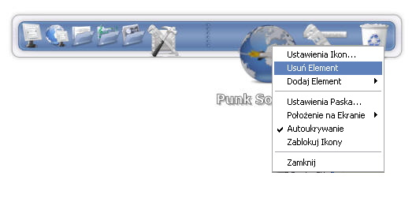

Czy kiedykolwiek patrząc przez ramię użytkownika komputera Mac zauważyłeś mały pasek z ikonami na dole ekranu? Jest on określany jako "dock". Jeśli nigdy go nie widziałeś, to jest to po prostu pasek na krawędzi ekranu z rzędem ikon. Funkcją paska jest przeniesienie często używanych programów i skrótów w łatwo dostępne miejsce, dzięki czemu nie zginą wśród wielu innych ikon pulpitu.
Albańskim, Arabski, Bengali, Brazylijski, Bułgarski, Kataloński, Chiński uproszczony, Chiński Tradycyjny, Chorwacki, Czeski, Duński, Holenderski, Angielski, Farsi, Francuski, Gruziński, Grecki, Hebrajski, Węgierski, Indonezyjski, Włoski, Japoński, Koreański, Norweski, Polski, Portugalski, Rumuński, Rosyjski, Serbski, Sinhalese Słowacki, Hiszpański, Szwedzki, Thai, Turecki, Ukraiński
Pierwszą rzecz jaką chce zrobić większość ludzi po instalacji, to dodanie nowych elementów do paska. Jest na to kilka różnych sposobów:
Możesz po prostu przeciągnąć i upuścić element na pasek RocketDock z różnych miejsc; z pulpitu, z okna Explorera, z paska szybkiego uruchamiania i z Menu Start
Innym sposobem na dodanie elementów jest kliknięcie prawym przyciskiem na pasku RocketDock i wybranie "Dodaj Element" z menu.
W tym miejscu dostępne jest kilka opcji, każda o trochę innej funkcjonalności. Każda jest opisana poniżej.
Docklety są to małe aplikacje, wykonujące jedno zadanie, znajdują się na pasku RocketDock. Mogą to być mierniki obciążenia systemu lub pamięci, Ikona Kosza która zmienia się w zależności czy kosz jest pusty, czy pełny. Możesz instalować nowe Docklety poprzez umieszczenie ich w folderze zawierającym instalajcę RocketDock, w Docklets:
C:\Program Files\RocketDock\Docklets (domyślny folder)
Po skopiowaniu pliku, w menu "Dodaj Element" pojawi się nowo dodany Docklet
Notatka: RocketDock wspiera tylko Docklety stworzone dla ObjectDock.
Możesz zmienić wygląd każdego elementu na pasku RocketDock. Po prostu kliknij na elemencie, który chcesz zmienić, prawym przyciskiem i wybierz z menu "Ustawienia Ikon".
W tym oknie zobaczysz Ustawienia Ikon dotyczące wybranej ikony, gdzie możesz zmienić właściwości elementu.
W tym miejscu znajduje się lista wszystkich folderów zawierających ikony, podstawowy zestaw znajduje się w katalogu:
C:\Program Files\RocketDock\Icons (domyślny folder)
Możesz dodać do tego folderu dowolne ikony, aby były dostępne w RocketDock. Możesz również użyć przycisku "+" aby dodać dodatkowy folder ikon, lub przycisku "-", aby usunąć.
Ten panel zawiera podgląd wszystkich ikon zawartych w wybranym folderze. Możesz również użyć przycisku "Domyślna Ikona", aby przywrócić domyślną ikonę dla elementu.
Podgląd aktualnie wybranej ikony.
W tym miejscu można zmienić szczegółowe ustawienia wyświetlania elementu i jak ikona ma reagować na kliknięcie prawym przyciskiem itp.
Można usunąć elementy z paska na dwa różne sposoby. Pierwsza metoda polega na przeciągnięciu ikony poza RocketDock. Element wtedy zniknie z paska. Drugą metodą jest kliknięcie na ikonie prawym przyciskiem myszy i wybranie opcji "Usuń Element".
Separatory można usunąć w ten sam sposób. Docklety mogą być usunięte tylko poprzez przeciągnięcie ikony poza pasek RocketDock.
Możesz przeciągać pliki i foldery na elementy paska.
Jeśli przeciągniesz plik/folder na ikonę aplikacji, aplikacja zostanie uruchomiona i zostanie otworzony plik/folder, jeśli aplikacja potrafi go otworzyć. Np. Możesz przeciągnąć obraz PNG na ikonę Photoshopa. Spowoduje to uruchomienie Photoshopa i otworzenie tego obrazu
Jeśli przeciągniesz plik/folder na element, który jest folderem, plik/folder zostanie skopiowany do tego folderu. Każdy element będzie reagował tak jakby był na w folderze na twoim komputerze.
Jeśli przeciągniesz pliki/foldery na ikonę kosza, zostaną usunięte.
Jeśli włączyłeś opcję ""minimalizowania okien do paska" w ogólnych ustawieniach, zminimalizowane okno pojawi się jako ikona na pasku. Tak jak można oczekiwać okno można przesuwać na pasku, ale nie może być usunięte poprzez wyrzucenie z paska. W Windows Vista, miniatury będą się aktualizować w czasie rzeczywistym jeśli jest włączona opcja "Desktop Composition" w ustawieniach wydajności.
Możesz otwierać i zamykać okno poprzez kliknięcie prawym przyciskiem myszy na ikonie i wybranie odpowiedniej opcji. Domyślnie okno zostanie otwarte po kliknięciu lewym przyciskiem myszy.
Możesz zapobiec minimalizacji okna do paska poprzez przyciśnięcie przycisku Control podczas minimalizowania okna.
Możesz uzyskać dostęp do niektórych opcji klikając prawym przyciskiem myszy na pasku.
Możesz wybrać położenie na ekranie, blokowanie ikon, monitor i autoukrywanie. W menu znajduje się również skrót do ustawień paska, więc dodawanie ustawień jako elementu nie jest konieczne.
W oknie ustawień paska znajduje się przycisk "Domyślnie". Spowoduje to ustawienie wszystkich parametrów RocketDock na wartości jak po nowej instalacji.
Notatka: To nie wpłynie w żaden sposób na elementy paska
Możesz schować RocketDock całkowicie naciskając kombinację klawiszy Ctrl+Alt+R. Wciśnij ponownie, aby pokazać RocketDock.
Jeśli masz więcej pytań, odwiedź nasze forum. Znajdziesz tam również tutoriale pokazujące różne możliwości dostosowywania RocketDock.
Jeśli twój język nie znajduje się na liście obsługiwanych przez program i chciałbyś pomóc tłumaczyć, lub zaktualizować istniejące tłumaczenia, instrukcje znajdziesz tutaj. Jeśli chcesz uzupełnić, lub poprawić tą dokumentację, skontaktuj się z nami na forum.
Opowiadanie innym o naszym programie jest dla nas nieocenioną pomocą. Umieszczenie linków na twojej stronie est dobrym początkiem. Możesz również znaleźć bannery na naszym forums, lub wysłać własne.
Mamy internetowy sklep o nazwie Punk Software Swag Shack. Możesz w nim kupić koszulki, podkładki pod mysz lub czapki, które mogą ci się spodobać. Część dochodów przeznaczona jest dla głodujących programistów Punk Software.